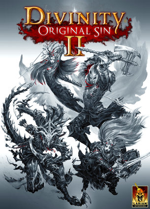

| Divinity Original Sin II | ||
|---|---|---|
|  | ||
| Éditeur(s)/Développeur(s): | Larian Studios | |
| Sortie sur PC : | Le 14 septembre 2017 | |
| Genre : | RPG | |
| Thème(s) : | Heroic Fantasy | |
| Mode(s) : | Jouable en solo | Multi en ligne | Multi en coopératif | Multi en compétitif | |
| Prix | 54,99$ (Standard Edition) | 71,99$ (Divine Editon) | 99,96$ (Eternal Edition) | |